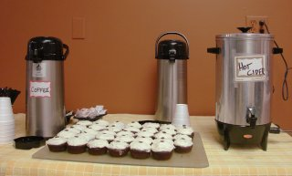

Part Time Management Positions
 Come be a part of something special. The Dryden Community Center Café is seeking outstanding, customer-friendly individuals to become part of our management team. We are a not-for-profit organization whose goal is to create a new energy in downtown Dryden. As managers you will be creating a welcoming environment for community members while having an opportunity to work with local artists and musicians showcasing their talents! Candidates with food service management experience preferred. Certified Barista a plus.
The Café will be opening in mid to late February. Café hours will be Thursday through Saturday from 8am until 9pm, and Sunday from 10am until 3pm. Additional days will be considered. Compensation will be based on experience and responsibilities.
Please email us at DrydenCommunityCafe@yahoo.com for further information.